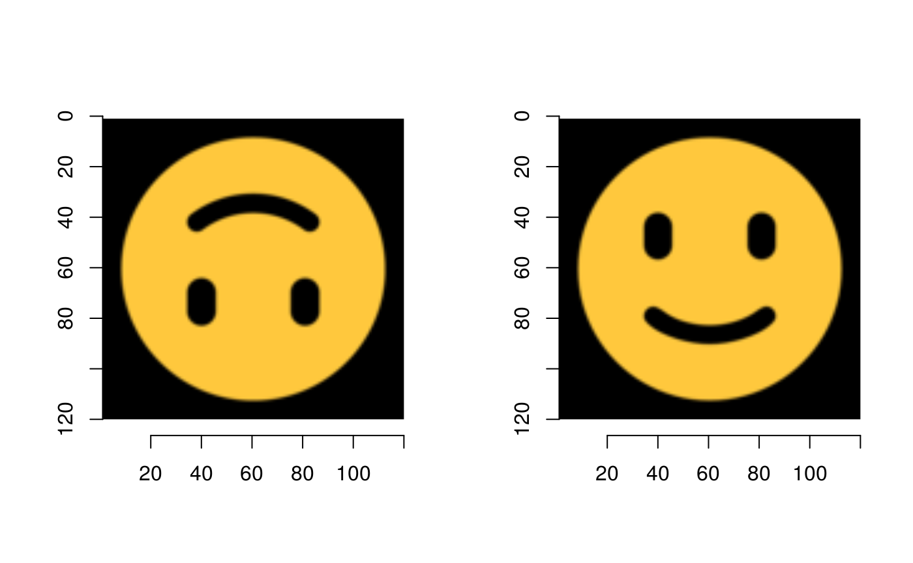
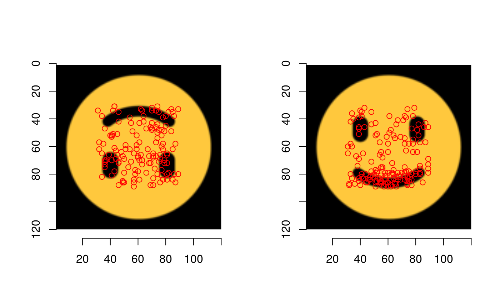
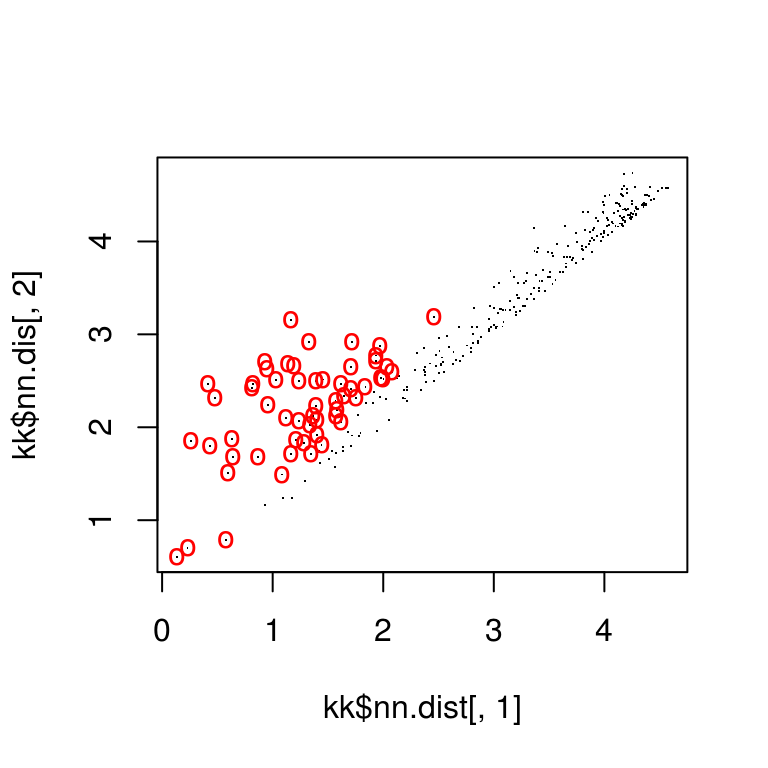
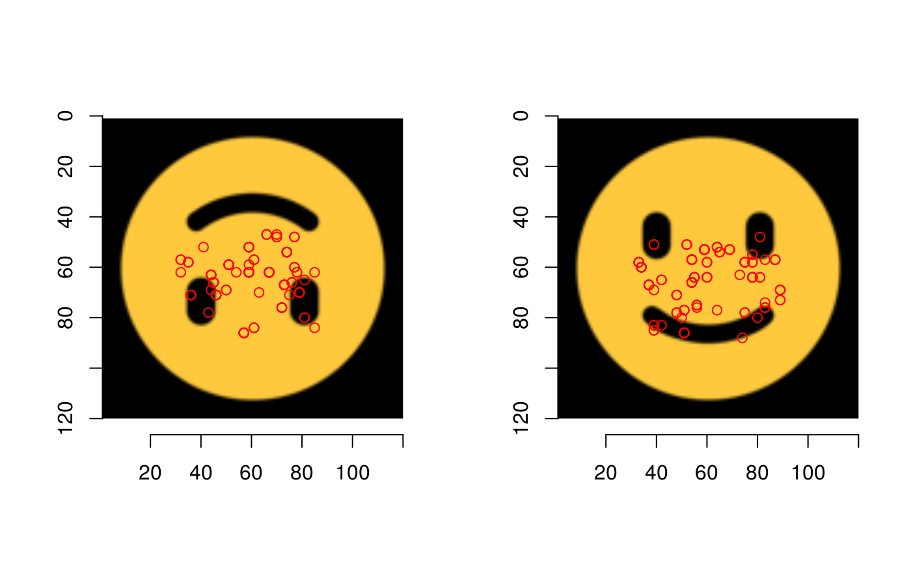
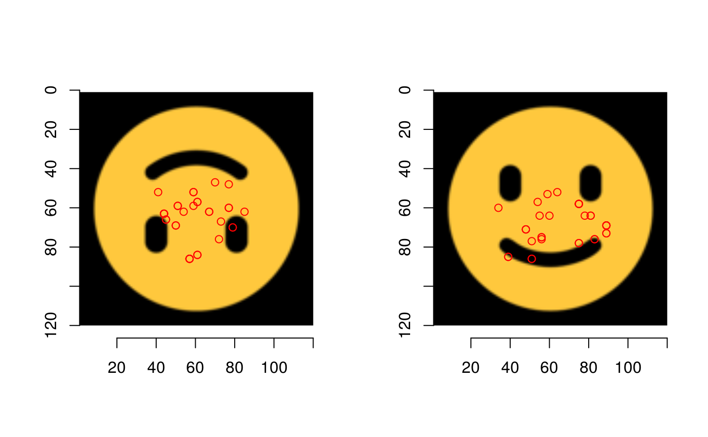
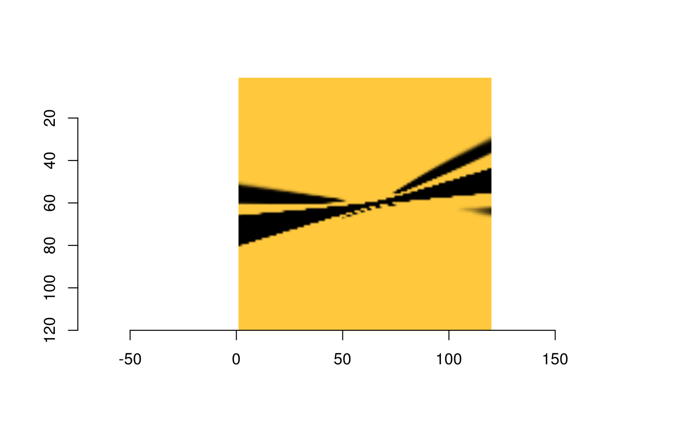

vignettes/keypoint-alignment-in-color.Rmd
keypoint-alignment-in-color.RmdThe R code underlying the functions in this vignette were borrowed with permission from Vinces Gaitan’s blog post: https://www.kaggle.com/vicensgaitan/image-registration-the-r-way/notebook
I have modified the code where necessary in order to make it more pipeline-friendly and function oriented.
The images we’ll be working with:
img_a_url <- "https://emojipedia-us.s3.dualstack.us-west-1.amazonaws.com/thumbs/120/microsoft/135/upside-down-face_1f643.png"
img_b_url <- "https://emojipedia-us.s3.dualstack.us-west-1.amazonaws.com/thumbs/120/microsoft/135/slightly-smiling-face_1f642.png"
img_a <- load.image(img_a_url)
img_b <- load.image(img_b_url)
imgs <- images_resize(img_a, img_b)
par(mfrow = c(1, 2))
plot(imgs[[1]])
plot(imgs[[2]])
hkp <- map(imgs, harris_keypoints, sigma = 0, thr = "90%")
par(mfrow = c(1, 2))
plot(imgs[[1]])
points(hkp[[1]]$centers$mx, hkp[[1]]$centers$my, col = "red")
plot(imgs[[2]])
points(hkp[[2]]$centers$mx, hkp[[2]]$centers$my, col = "red")
get_kpf <- function(angles, hkp, im) {
kpa <- data_frame(angle = angles, v = list(hkp$centers)) %>%
tidyr::unnest(v) %>%
dplyr::rename(theta = angle, x = mx, y = my) %>%
mutate(idx = 1:n()) %>%
rowwise() %>%
tidyr::nest(-theta, -idx, .key = "v") %>%
select(-idx)
purrr::pmap(list(theta = kpa$theta, v = kpa$v), descriptor_orientation, im = im) %>%
do.call("rbind", .)
}
kpf <- pmap(list(angles = angles, hkp = hkp, im = imgs), get_kpf)match_points <- knn_points(kpf[[1]], kpf[[2]],
hkp[[1]]$centers, hkp[[2]]$centers,
show_plot = T, ratio = .8)
There are not a lot of overlapping points to go on here…
par(mfrow = c(1, 2))
plot(imgs[[1]])
points(hkp[[1]]$centers$mx[match_points$points_a], hkp[[1]]$centers$my[match_points$points_a], col = "red")
plot(imgs[[2]])
points(hkp[[2]]$centers$mx[match_points$points_b], hkp[[2]]$centers$my[match_points$points_b], col = "red")
ransac_points <- ransac(match_points$points_a, match_points$points_b)
par(mfrow = c(1, 2))
plot(imgs[[1]])
points(hkp[[1]]$centers$mx[match_points$points_a[ransac_points$inliers]],
hkp[[1]]$centers$my[match_points$points_a[ransac_points$inliers]], col = "red")
plot(imgs[[2]])
points(hkp[[2]]$centers$mx[match_points$points_b[ransac_points$inliers]],
hkp[[2]]$centers$my[match_points$points_b[ransac_points$inliers]], col = "red")
map_fcn <- map_affine_gen(ransac_points$homography)
img_a_warp <- imwarp(imgs[[1]], map_fcn, direction = "backward", boundary = "neumann")
plot(img_a_warp)